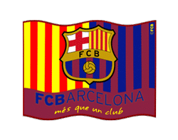
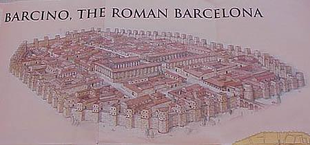
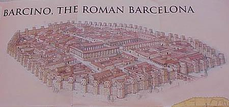

Barcelona

History
Barcelona was founded by Phoenicians and Carthaginians. The original name of the city was Barcino, probably named after the Carthaginian ruler Hamilcar Barca. The Romans arrived on the 1st century B.C. choosing as capital of the region, first Tarraco (current Tarragona) and since the 3rd century A.D. Barcino (Barcelona) . Remainings from this period can still be found in Barcelona especially in the Plaza del Rei and in the Gothic quarter.
After the Romans, the Visigoths occupied the city and changed its name to Barcinona in the 5th century A.D. Later on, during the 8th century Barcinona was occupied by the Moors remaining under their control for another 100 years until the Franks conquered the city again. The Spanish Reconquest began in this zone, who became known as the Spanish Marches (La Marca Hispánica).
During this period, the region was divided into Counties, the most important of which was the County of Barcelona. The Count of Barcelona Wilfred the Hairy gave origin to the Catalan nation establishing a hereditary system of succession. In the year 988 Count Borrell II achieved independence from the Carolingian empire for the County of Barcelona, the territory of the County expanded forming the region which would be later known as Catalonia.
Catalonia became a part of the Crown of Aragon, but with the union of the kingdoms of Aragon and Castile, Barcelona began to loose its importance and power. During the following years, conflicts raised between Barcelona and Madrid. Barcelona was banned from trading with the American colonies and in the 17th century Catalonia went to war with Spain, declaring its independence with the support of France. In this war Spain lost the region of the Roussillon and other parts of Catalonia which are nowadays French territories, a situation that would happen again in the history of Catalonia when it was invaded by the French troops of Napoleon, however, this time the territories were returned to Spain after the fall of the French Empire.
The city began to gain importance again during the Industrial Revolution in the 19th century, being seat to the World's Fair in 1888. Once its influence was recovered, Catalonia returned to its nationalist pretensions demanding more political freedom and boosting its cultural identity. On the 20th century, however, political repression during the dictatorship of Franco impeded the independence of Catalonia. After the government of Franco, Catalonia recovered its political authority and the city of Barcelona became one of the most important and attractive in Spain.
In the recent history of the city we cannot forget that Barcelona was the site for the Olympic Games of 1992 with great international success. Recently it was also the seat for the Universal Forum of Cultures (in 2004)

 

click here to findout more about barcelona